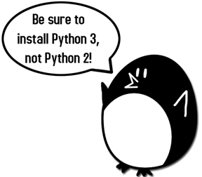
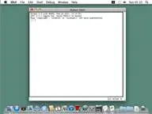
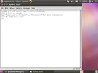

X


Use this link to get 80%% off the Automate the Boring Stuff online video course.
Support me on Patreon
It might help if you know a bit about Python programming (or how to program in another language besides Python) before you read through this book; however even if you haven’t you can still read this book anyway. Programming isn’t nearly as hard as people think it is. If you ever run into some trouble, you can read the free book “Invent Your Own Computer Games with Python” online at http://inventwithpython.com or look up a topic that you find confusing on the Invent with Python wiki at http://inventwithpython.com/wiki.
You don’t need to know how to use the Pygame library before reading this book. The next chapter is a brief tutorial on all of Pygame’s major features and functions.
Just in case you haven’t read the first book and already installed Python and Pygame on your computer, the installation instructions are in this chapter. If you already have installed both of these then you can skip this chapter.
Before we can begin programming you'll need to install software called the Python interpreter on your computer. (You may need to ask an adult for help here.) The interpreter is a program that understands the instructions that you’ll write (or rather, type out) in the Python language. Without the interpreter, your computer won't be able to run your Python programs. We'll just refer to “the Python interpreter” as “Python” from now on.
The Python interpreter software can be downloaded from the official website of the Python programming language, http://www.python.org. You might want the help of someone else to download and install the Python software. The installation is a little different depending on if your computer’s operating system is Windows, Mac OS X, or a Linux OS such as Ubuntu. You can also find videos online of people installing the Python software on their computers at http://invpy.com/installing.
When you get to http://python.org, you should see a list of links on the left (such as “About”, “News”, “Documentation”, “Download”, and so on). Click on the Download link to go to the download page, then look for the file called “Python 3.2 Windows Installer (Windows binary -- does not include source)” and click on its link to download Python for Windows.
Double-click on the python-3.2.msi file that you've just downloaded to start the Python installer. (If it doesn’t start, try right-clicking the file and choosing Install.) Once the installer starts up, just keep clicking the Next button and just accept the choices in the installer as you go (no need to make any changes). When the install is finished, click Finish.
Mac OS X 10.5 comes with Python 2.5.1 pre-installed by Apple. Currently, Pygame only supports Python 2 and not Python 3. However, the programs in this book work with both Python 2 and 3.
The Python website also has some additional information about using Python on a Mac at http://docs.python.org/dev/using/mac.html.
Pygame for Linux also only supports Python 2, not Python 3. If your operating system is Ubuntu, you can install Python by opening a terminal window (from the desktop click on Applications > Accessories > Terminal) and entering “sudo apt-get install python2.7” then pressing Enter. You will need to enter the root password to install Python, so ask the person who owns the computer to type in this password if you do not know it.
You also need to install the IDLE software. From the terminal, type in “sudo apt-get install idle”. The root password is also needed to install IDLE (ask the owner of your computer to type in this password for you).
We will be using the IDLE software to type in our programs and run them. IDLE stands for Interactive DeveLopment Environment. The development environment is software that makes it easy to write Python programs, just like word processor software makes it easy to write books.
If your operating system is Windows XP, you should be able to run Python by clicking the Start button, then selecting Programs, Python 3.1, IDLE (Python GUI). For Windows Vista or Windows 7, just click the Windows button in the lower left corner, type “IDLE” and select “IDLE (Python GUI)”.
If your operating system is Max OS X, start IDLE by opening the Finder window and click on Applications, then click Python 3.2, then click the IDLE icon.
If your operating system is Ubuntu or Linux, start IDLE by opening a terminal window and then type “idle3” and press Enter. You may also be able to click on Applications at the top of the screen, and then select Programming, then IDLE 3.
  
The window that appears when you first run IDLE is called the interactive shell. A shell is a program that lets you type instructions into the computer. The Python shell lets you type Python instructions, and the shell sends these instructions to the Python interpreter to perform.
Pygame does not come with Python. Like Python, Pygame is available for free. You will have to download and install Pygame, which is as easy as downloading and installing the Python interpreter. In a web browser, go to the URL http://pygame.org and click on the “Downloads” link on the left side of the web site. This book assumes you have the Windows operating system, but Pygame works the same for every operating system. You need to download the Pygame installer for your operating system and the version of Python you have installed.
You do not want to download the “source” for Pygame, but rather the Pygame “binary” for your operating system. For Windows, download the pygame-1.9.1.win32-py3.2.msi file. (This is Pygame for Python 3.2 on Windows. If you installed a different version of Python (such as 2.7 or 2.6) download the .msi file for your version of Python.) The current version of Pygame at the time this book was written is 1.9.1. If you see a newer version on the website, download and install the newer Pygame.
For Mac OS X, download the .zip or .dmg file for the version of Python you have and run it.
For Linux, open a terminal and run “sudo apt-get install python-pygame”.
On Windows, double click on the downloaded file to install Pygame. To check that Pygame is install correctly, type the following into the interactive shell:
>>> import pygame
If nothing appears after you hit the Enter key, then you know Pygame has successfully been installed. If the error ImportError: No module named pygame appears, then try to install Pygame again (and make sure you typed import pygame correctly).
This chapter has five small programs that demonstrate how to use the different features that Pygame provides. In the last chapter, you will use these features for a complete game written in Python with Pygame.
A video tutorial of how to install Pygame is available from this book's website at http://invpy.com/videos.
“Making Games with Python & Pygame” is different from other programming books because it focuses on the complete source code for several game programs. Instead of teaching you programming concepts and leaving it up to you to figure out how to make programs with those concepts, this book shows you some programs and then explains how they are put together.
In general, you should read these chapters in order. There are many concepts that are used over and over in these games, and they are only explained in detail in the first game they appear in. But if there is a game you think is interesting, go ahead and jump to that chapter. You can always read the previous chapters later if you got ahead of yourself.
Each chapter focuses on a single game program and explain how different parts of the code work. It is very helpful to copy these programs by typing in the code line by line from this book.
However, you can also download the source code file from this book's website. In a web browser, go to the URL http://invpy.com/source and follow the instructions to download the source code file. But typing in the code yourself really helps you learn the code better.
While you can just type in the code you read out of this book, you will need to download the graphics and sound files used by the games in this book from http://invpy.com/downloads. Make sure that these image and sound files are located in the same folder as the .py Python file otherwise your Python program will not be able to find these files.
When entering the source code yourself, do not type the line numbers that appear at the beginning of each line. For example, if you see this in the book:
1. number = random.randint(1, 20)
2. spam = 42
3. print('Hello world!')
You do not need to type the “1.” on the left side, or the space that immediately follows it. Just type it like this:
number = random.randint(1, 20)
spam = 42
print('Hello world!')
Those numbers are only used so that this book can refer to specific lines in the code. They are not a part of the actual program.
Aside from the line numbers, be sure to enter the code exactly as it appears. Notice that some of the lines don’t begin at the leftmost edge of the page, but are indented by four or eight or more spaces. Be sure to put in the correct number of spaces at the start of each line. (Since each character in IDLE is the same width, you can count the number of spaces by counting the number of characters above or below the line you're looking at.)
For example in the code below, you can see that the second line is indented by four spaces because the four characters (“whil”) on the line above are over the indented space. The third line is indented by another four spaces (the four characters, “if n” are above the third line's indented space):
while spam < 10:
if number == 42:
print('Hello')
Some lines of code are too long to fit on one line on the pages in this book, and the text of the code will wrap around to the next line. When you type these lines into the file editor, enter the code all on one line without pressing Enter.
You can tell when a new line starts by looking at the line numbers on the left side of the code. For example, the code below has only two lines of code, even though the first line wraps around:
1. print('This is the first line! xxxxxxxxxxxxxxxxxxxxxxxxxxxxx xxxxxxxxxxxxxx’)
2. print('This is the second line, not the third line.')
Some of the programs in this book are a little long. Although it is very helpful to learn Python by typing out the source code for these programs, you may accidentally make typos that cause your programs to crash. It may not be obvious where the typo is.
You can copy and paste the text of your source code to the online diff tool on the book’s website. The diff tool will show any differences between the source code in the book and the source code you’ve typed. This is an easy way of finding any typos in your program.
Copying and pasting text is a very useful computer skill, especially for computer programming. There is a video tutorial on copying and pasting at this book’s website at http://invpy.com/copypaste.
The online diff tool is at this web page: http://invpy.com/diff/pygame. There is also a video tutorial on how to use this tool on the book’s website.
There is a lot that you can learn about programming. But you don’t need to learn all of it now. There are several times in this book where you might like to learn these additional details and explanations, but if I included them in this book then it would add many more pages. If this larger, heavier book accidentally fell on you the weight of these many additional pages would crush you, resulting in death. Instead, I have included “more info” links in this book that you can follow on this book’s website. You do not have to read this additional information to understand anything in this book, but it is there if you are curious. These (and other) links have been shortened and begin with http://invpy.com.
All of the information from these “more info” links can also be downloaded from http://invpy.com/pygamemoreinfo.
Even though this book is not dangerously heavy, please do not let it fall on you anyway.